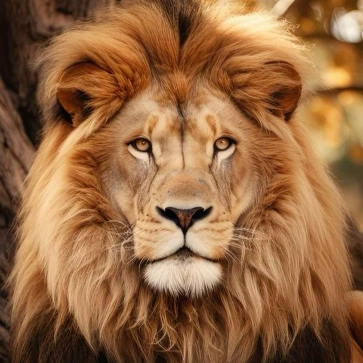

In Africa, lions are big, strong cats that are like kings of the land. They have big, bushy hair around their heads called a mane. Lions live together in groups called prides, and the leader is usually a big, strong male lion. These lions are really good at hunting. They work together with the other lions in their pride to catch animals like zebras and buffalo for food. Even though they look fierce, lions actually spend a lot of time resting and sleeping, sometimes for most of the day. When the sun starts to set, you can hear their loud roars in the distance as they let other animals know this is their territory. Lions are the kings of the savanna! Their powerful roars can be heard across the plains, and they use this sound to communicate with each other and warn other animals to stay away. With their sharp teeth and claws, lions are skilled hunters, able to take down prey much larger than themselves. So, if you ever hear a lion's roar in the wild, you'll know the king of the savanna is nearby. As night falls on the savanna, the lions in the pride become active. They gather together, and the lionesses, which are the female lions, start to plan their hunt. Lions are known for their teamwork when hunting. The lionesses work together to surround their prey, using their speed and stealth to get close. Then, with a sudden burst of speed, they pounce on their unsuspecting target. Once they catch their meal, the lions feast together, tearing into the fresh meat. The leader of the pride, the dominant male lion, gets to eat first, followed by the lionesses and the cubs. Lions are protective of their territory and their pride. They use their powerful roars to warn other lions to stay away. In the morning, as the sun rises over the savanna, the pride rests after their night of hunting. The lions groom each other, licking their fur to keep it clean and tidy. This grooming also helps to strengthen the bonds within the pride. As the day heats up, the lions seek shade under trees or in tall grasses, lounging together in the warmth of the sun. The cycle of life continues for these majestic creatures, the kings and queens of the savanna. As the day fades into night, the lions rest peacefully, their magestical roars echoing through the vast landscape.
